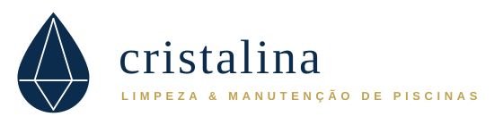
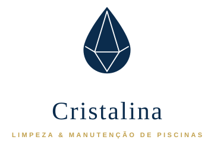
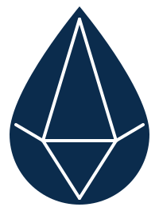
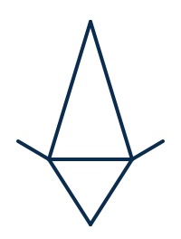

Limpeza & manutenção de piscinas
A sua piscina, sempre pronta. Tratamos da água para que só tenha de pensar em aproveitá-la — com o conforto de saber que está em boas mãos.
O conceito
O símbolo une as duas metades do nome: a gota é a água da piscina; as arestas no interior desenham o diamante — água tão limpa que brilha. Uma só cor, arestas nítidas: nada a esconder.
O logótipo
Quatro versões cobrem todas as necessidades. Em cada aplicação, escolha a versão que dá mais ar ao símbolo — nunca comprima, rode ou recolora o logótipo.





A paleta
#0B2C4D · RGB 11 44 77#16406B · RGB 22 64 107#DCE9F2 · RGB 220 233 242#FFFFFF · RGB 255 255 255#C2A14D · RGB 194 161 77O dourado nunca ultrapassa ~10% de qualquer peça. É um metal precioso: usa-se em filete, não em balde.
A tipografia
Serifa romana, calma e elegante — o tom de uma casa de confiança. Usar sempre em peso regular, nunca em bold nem itálico.
Fazemos a manutenção semanal da sua piscina: análise e equilíbrio da água, aspiração, limpeza de filtros e verificação dos equipamentos. Se algo precisar de atenção, avisamos antes de agir.
Redonda e legível, com um toque acolhedor. Regular para texto corrido, Semibold 600 para destaques e botões.
Limpeza & manutenção de piscinas
Etiquetas, taglines e eyebrows: Nunito Sans Semibold, maiúsculas, espaçamento largo, quase sempre em dourado.
O tom de voz
Falamos como um profissional de confiança à porta de casa: claro, caloroso e sem alarmismos. Explicamos o que fazemos, cumprimos o que dizemos.
Tiramos preocupações em vez de as criar. Nada de linguagem técnica sem tradução, nada de urgências fabricadas.
«Está tudo tratado. A água foi analisada e equilibrada — pode usar a piscina hoje mesmo.»
Dizemos o que foi feito, quando voltamos e quanto custa. A confiança constrói-se com detalhes verificáveis.
«Visita concluída às 10h30: aspiração, limpeza do filtro e reposição de cloro. Próxima visita: quinta-feira.»
Assumimos o resultado, não apenas o serviço. Quando algo falha, dizemos primeiro e resolvemos depressa.
«Se a água não estiver perfeita quando chegar o fim de semana, voltamos sem custos.»
Aplicações
O cartão de visita mostra a lógica de toda a comunicação: frente em marinho com a informação essencial, verso em branco com o símbolo e um filete dourado.
Frente — marinho, nome em Marcellus, contactos em Nunito Sans.
Verso — branco com o símbolo; o filete dourado atravessa o cartão.